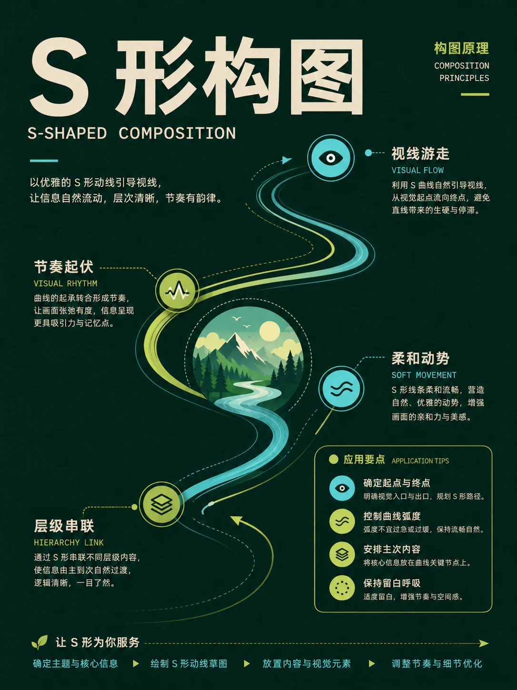

视线游走
VISUAL FLOW原海报：「利用 S 曲线自然引导视线，从视觉起点流向终点，避免直线带来的生硬与停滞。」
两道反向缓弯把静态版面变成一段有起点、有中转、有落点的游历，延长画面停留时间。
构图逻辑 / 字母形与曲线 NO. 037
S-SHAPED COMPOSITION
以优雅的 S 形动线引导视线，让信息自然流动，层次清晰，节奏有韵律。
构图原理
COMPOSITION
PRINCIPLES
横拖画布塑曲率 · 拖弯柄验正反 S 与 C 退化 · 拖四站归脊 · 点红标速修 · 方向键微调
WHY THE S-CURVE WORKS · VISUAL FLOW & CONTINUITY
如果把眼睛的移动当成行车，直线像没有风景的高速公路，直角折线像红灯频闪的十字路口，而 S 形曲线则像一条有缓坡和弯道的山间盘山路——它让视线在不费力的惯性里多走一段路、多看两处景。
这背后叠合了两条经心理学反复验证的感知机制：第一，完形心理学创始人马克斯·韦特海默在 1923 年提出「良好连续律」，说明视觉系统天生偏爱切线光滑延续的轨迹，能把分散的图文顺着平滑弧线自动缝合成一股连续气流；第二，巴尔与内塔在 2006 年发表于《心理科学》的快速判断实验发现，人对尖锐折角容易产生下意识警觉，对圆润流畅的曲线轮廓则有更稳定的好感与安全评价。
原海报：「利用 S 曲线自然引导视线，从视觉起点流向终点，避免直线带来的生硬与停滞。」
两道反向缓弯把静态版面变成一段有起点、有中转、有落点的游历，延长画面停留时间。
原海报：「曲线的起承转合形成节奏，让画面张弛有度，信息呈现更具吸引力与记忆点。」
弯腹处视线自然放缓停留，穿过中央拐点时轻快提速，一紧一松生出视觉呼吸感。
原海报：「S 形线条柔和流畅，营造自然、优雅的动势，增强画面的亲和力与美感。」
没有尖角冲撞，也不像纯对称那样静止凝固，尤其适合风景、器物、服饰、文化与品牌故事。
原海报：「通过 S 形串联不同层级内容，使信息由主到次自然过渡，逻辑清晰，一目了然。」
把最重的主视觉压在拐点或首弯，把次级说明与行动点顺势挂在后半程，形成清晰的叙事梯次。
ORIGINS & LINEAGE · FROM GUO XI TO HOGARTH
东西方画论隔着将近七百年，却几乎用同一套直觉发现了 S 线的秘密：无论宋画山岚、米开朗基罗雕塑，还是 18 世纪伦敦铜版画，只要画面想在静止里藏进流动与深度，最先浮现的往往就是这条带拐点的蛇形线。
HOGARTH'S SEVEN CURVES (1753) · CONTROLLING CURVATURE
037 原海报第二条应用要点写着：「控制曲线弧度：弧度不宜过急或过缓，保持流畅自然。」早在 1753 年，威廉·荷加斯就在《美的分析》图版 I 里并排画下 7 条弯度渐增的蛇形线，专门讨论「弯到什么程度才算刚刚好」。点选下方 01–07 任意一条标本，看它在真实海报跨页里如何左右文字安全区与视线松紧。
经验参考带：多数竖版海报与页面首屏，将上下单侧弯幅控制在画宽的 15%–32%（接近荷加斯 3–5 号线），既能显出摇曳动势，又能给弯腹外侧留出足以舒适排字的负空间。
FOUR STATIONS & NEGATIVE SPACE · PUTTING S TO WORK
画对曲线只完成了一半。如果把四块信息胡乱堆在画布上，再优雅的 S 线也会沦为背景装饰。原海报把落地方法拆成四步：先定主题和起终点，再勾 S 草图，再把主次元素按层级挂到关键节点，最后靠留白调出呼吸。
下面这套「茶会展讯装配台」故意提供三个常见破坏开关——试试亲自点开它们，感受为什么首尾倒置、主次同大或留白挤干任何一条都会让 S 形构图当场失效。
WHEN NOT TO USE IT · THREE MISFITS
S 形构图天生自带「游走、柔美、叙事」的脾气。一旦画面追求的是横向速比、零犹豫急读或庄严稳重，强行拧出一条 S 动线反而是在给读者设路障。点击下方任意场景的切换钮，对照「硬套翻车」与「换对骨架」的差别。
VISUAL CHECK · SPOT THE BALANCED S-FLOW
同一张「秋季溪山茶会」竖版海报，主题、配色、四块文字层级与山溪主视觉完全相同——四张方案只差「动线曲线与节点落位」这一个变量。请凭直觉与刚学到的几何标准，选出真正成立的 S 形构图。
ORIGINAL POSTER · NO. 037 ARCHIVE
